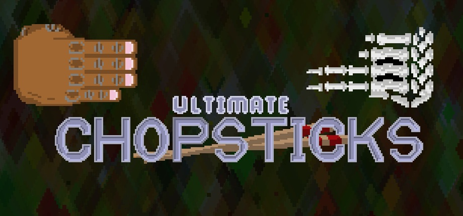
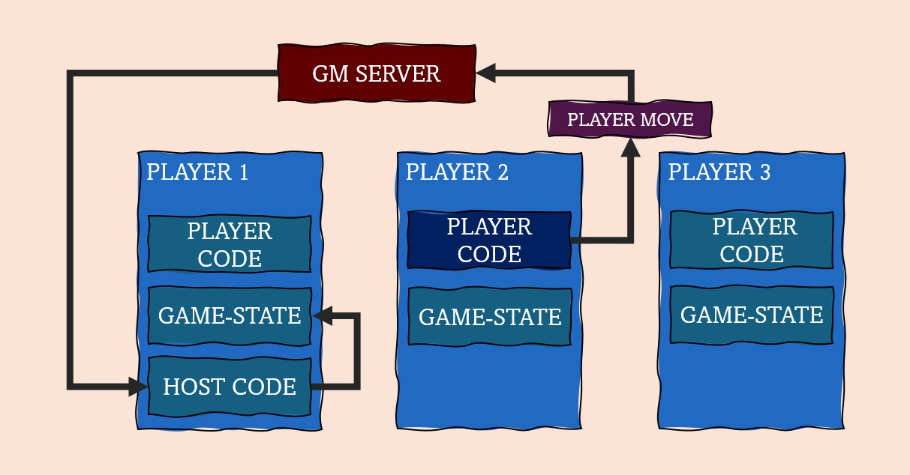
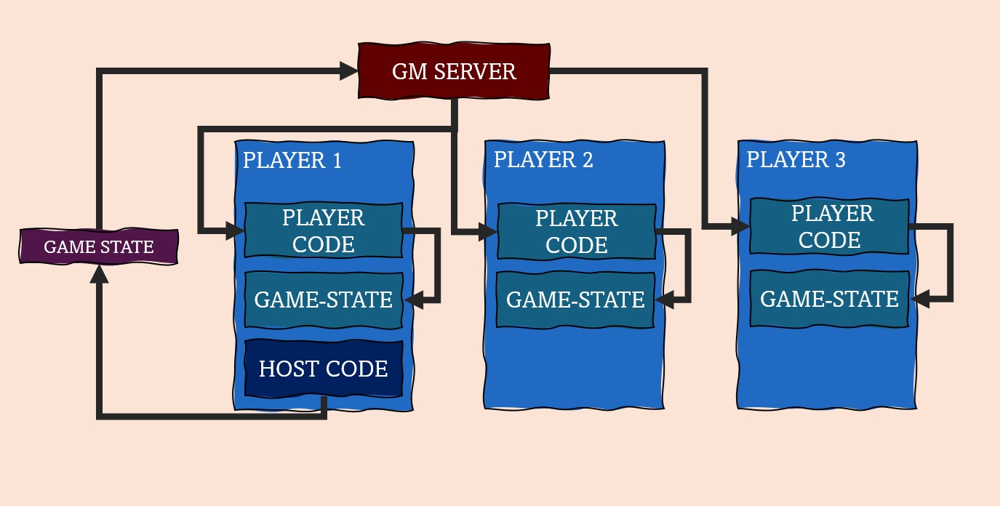

Data Scientist | Data Analyst | Software Developer
About Me
I am a data scientist with a interest in machine learning, analytics, software development, and building end-to-end solutions. I have worked across a range of industries, including pharmacy, music and media, transport, research, and construction.
In addition to data science, I develop game and puzzle apps as personal and commercial projects. This portfolio showcases a selection of projects that highlight my experience in data science, software engineering, and game development.
Multiplayer strategy, configurable rules, heuristic AI, and reusable networking architecture
Project Overview

Ultimate Chopsticks is a multiplayer strategy game based on the traditional Chopsticks hand game. I designed, developed, and released the project on Steam using GameMaker Studio 2, with all game systems written in GameMaker Language (GML).
The main goal was to create a complete digital implementation that supports the many Chopsticks rule variants played around the world. A configurable rules engine lets players customise game mechanics without changing the underlying game logic.
Alongside the game, I developed a reusable networking framework capable of synchronising arbitrary turn-based game states, making the underlying architecture applicable to future multiplayer projects.
Key Features
Online multiplayer over Steam
Local hot-seat multiplayer
Configurable rules engine
Single-player AI opponent
Persistent challenge mode
Steam friend integration
Host-authoritative networking
Reusable turn-based networking framework
Multiplayer Networking
The multiplayer system uses a host-authoritative architecture. When a player performs an action, the client sends only the move to the host. The host validates it, updates the canonical game state, serialises the result, and broadcasts the updated state to every connected client.
This approach keeps all players synchronised and reduces the risk of divergence caused by dropped or delayed packets. Because Chopsticks has a compact state, sending the complete updated state after each move provides a simple and robust solution with minimal overhead.

Step 1: the active player sends only the move object to the host.

Step 2: the host validates the move and distributes the new authoritative game state.
The networking layer also includes packet fragmentation for larger messages, heartbeat monitoring, connection timeouts, and defensive handling of disconnected players.
Steam Integration
Rather than relying entirely on Steam's lobby system, I implemented a custom matchmaking solution. The game queries each player's Steam friends list and exchanges lightweight presence messages between users currently running the game. This provides direct control over matchmaking while keeping sessions limited to existing Steam friends.
Reusable Networking Framework
The networking code is independent of the Chopsticks rules. Another turn-based game can use the framework by providing two conversion functions: one to serialise its game state into a string and another to reconstruct that state. This separation keeps game logic and transport logic loosely coupled and makes the framework reusable with minimal modification.
Artificial Intelligence
The computer opponent uses depth-limited game-tree search with heuristic evaluation. Search depth scales with difficulty, providing stronger play at higher settings while keeping response times quick on lower settings.
Non-terminal positions are evaluated using factors such as:
Number of legal moves available
Number of active hands remaining
Overall board position
Small amounts of controlled randomness reduce predictability and allow lower difficulty levels to make occasional human-like mistakes.
Testing and Reliability
Randomised systems were tested with deterministic seeds so procedural rules and AI behaviour could be reproduced during debugging. The networking layer was also tested under packet-loss and timeout conditions to verify that synchronisation failures and disconnected players were handled gracefully.
Technologies and Skills
GameMaker Studio 2GameMaker Language (GML)Steamworks APIMultiplayer NetworkingState SerialisationHeuristic SearchArtificial IntelligenceDefensive ProgrammingSoftware ArchitectureUI Design